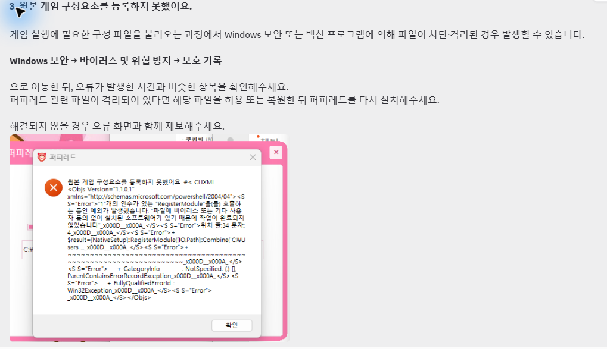
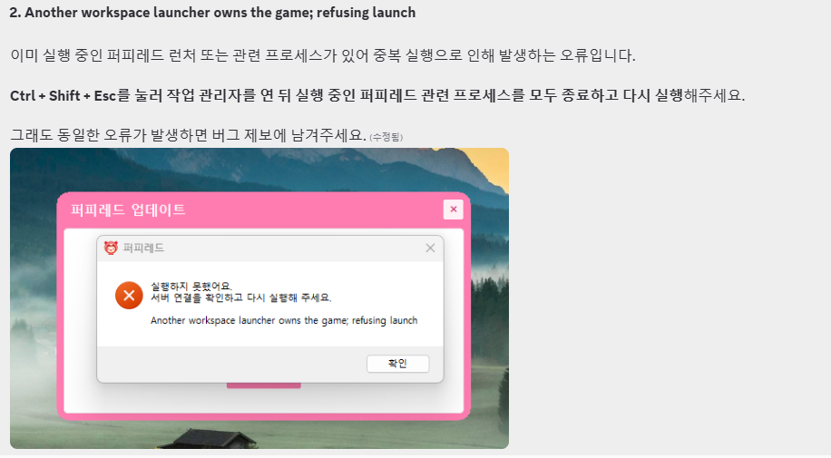
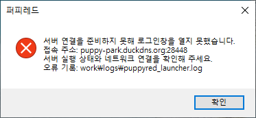

비공식 복원 프로젝트입니다.
원작의 공식 서비스나 공식 재오픈 안내가 아닙니다. 원작 명칭과 관련 콘텐츠의 권리는 각 권리자에게 있습니다.
비공식 복원 프로젝트 · 다운로드 및 이용 안내
게임을 시작하기 전에 읽어 주세요.
원작의 공식 서비스나 공식 재오픈 안내가 아닙니다. 원작 명칭과 관련 콘텐츠의 권리는 각 권리자에게 있습니다.
일부 기능과 표현이 원작과 다를 수 있고, 오류나 이용 제한이 생길 수 있습니다. 현재 이용 가능 여부는 실제 공지를 확인해 주세요.
다른 서비스와 같은 비밀번호를 사용하지 마세요. 오류 제보 시에는 비밀번호·인증 정보·개인정보를 지워 주세요.
처음 설치할 때 아래 순서대로 확인해 주세요.
다운로드 버튼으로 GitHub Releases를 열고, 배포 안내와 지원 환경을 확인해 주세요. Assets에 첨부된 설치 파일을 받으면 됩니다.
Source code 파일은 게임 설치 파일이 아니에요.
파일 이름과 배포자를 확인하고 릴리스의 설치 방법을 따라 주세요. 압축 파일은 먼저 모두 풀어 주세요.
보안 경고가 나타나면 실행 전 FAQ를 확인해 주세요.
설치한 런처를 열고 업데이트가 끝날 때까지 기다려 주세요. 기존 이용자는 게임 시작 시 자동 패치를 받습니다. 로그인과 가입은 실제 배포 안내를 따라 주세요.
설치 파일 이름·지원 OS·세부 이용 방법은 실제 릴리스 안내를 기준으로 확인해 주세요.
설치 전에 이용 안내와 릴리스의 지원 환경을 확인해 주세요.
질문을 누르면 답변을 볼 수 있어요.
실제 GitHub Releases 주소가 아직 등록되지 않았거나 배포를 잠시 닫은 상태예요. 샘플 사이트에서는 파일을 받을 수 없습니다. 최신 공지를 확인해 주세요.
릴리스가 비공개·초안 상태이거나 주소가 변경되었을 수 있어요. 홈페이지의 다운로드 버튼으로 다시 이동해 Assets를 확인해 주세요. 계속 파일이 없다면 실제 공지의 운영자 문의 경로로 알려 주세요.
네트워크와 디스크 여유 공간, 다운로드 완료 여부를 확인해 주세요. 불완전한 설치 파일만 다시 받아 보세요. 기존 게임 폴더나 개인 데이터는 지우지 말고, 출처를 알 수 없는 대체 파일은 사용하지 마세요.
퍼피레드는 서명되지 않은 프로그램이라 Windows 보호 창이 표시될 수 있어요. 이 홈페이지에서 안내한 배포 파일을 받았다면 「추가 정보 → 실행」을 눌러 진행해 주세요.
게임에 필요한 구성 파일을 불러오는 과정에서 Windows 보안 또는 백신이 파일을 차단·격리했을 때 발생할 수 있어요.
Windows 보안 → 바이러스 및 위협 방지 → 보호 기록에서 오류가 발생한 시간과 비슷한 항목을 확인해 주세요. 이 홈페이지에서 받은 퍼피레드 배포 파일이 격리되어 있다면 해당 파일을 허용 또는 복원한 뒤 퍼피레드를 다시 설치해 주세요.
해결되지 않으면 오류 화면과 함께 오픈채팅으로 알려 주세요.

「실행하지 못했어요. 서버 연결을 확인하고 다시 실행해 주세요.」 아래에 Another workspace launcher owns the game; refusing launch라고 표시된다면, 이미 실행 중인 퍼피레드 런처나 관련 프로세스가 남아 있는 중복 실행 오류예요.
Ctrl + Shift + Esc를 눌러 작업 관리자를 열고, 퍼피레드 실행 관련 프로세스를 모두 종료한 뒤 다시 실행해 주세요.
같은 오류가 계속되면 오류 화면과 함께 오픈채팅으로 알려 주세요.

아래 창은 보통 이용자 컴퓨터 문제가 아니라 서버가 내려가 접속할 수 없을 때 나타나는 오류예요.
이 창이 뜨면 오류 화면과 발생 시각을 함께 오픈채팅으로 연락해 주세요.

홈페이지의 모바일 지원은 게임의 모바일·Mac 실행 지원을 뜻하지 않습니다. 설치할 PC의 운영체제가 실제 릴리스의 지원 목록에 있는지 확인해 주세요.
최신 날짜부터 표시됩니다.